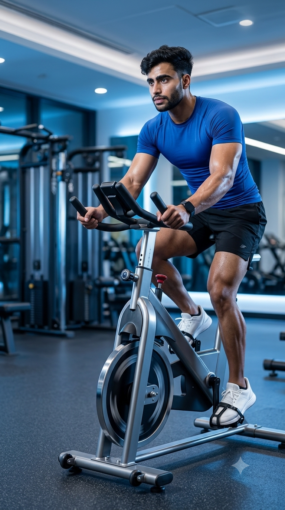

Primary Muscles
Quadriceps & Glutes
Improve Cardiovascular Endurance, Burn Calories, and Build Lower-Body Strength
Stationary Cycling is a low-impact cardiovascular exercise that improves heart health, enhances endurance, and helps burn calories without placing excessive stress on the joints. Suitable for beginners and experienced athletes alike, it strengthens the quadriceps, hamstrings, glutes, and calves while providing an effective indoor workout in any weather. By adjusting resistance and cadence, Stationary Cycling can be used for steady-state endurance training, interval workouts, fat loss, or performance conditioning.

Quadriceps & Glutes
Stationary Bike
Beginner to Advanced
Cardiovascular Exercise
Discover the primary and supporting muscles activated during Stationary Cycling. Every pedal stroke strengthens the lower body while the core stabilizes your posture and helps transfer power efficiently, making cycling an excellent exercise for cardiovascular fitness and muscular endurance.
The quadriceps produce the majority of the pedaling force by extending the knee during every revolution, making them the primary muscles responsible for generating power and maintaining cycling speed.
These muscles extend the hips, assist the downward pedal stroke, and provide powerful propulsion while helping stabilize the pelvis throughout the cycling motion.
The calf muscles assist ankle movement, improve pedaling efficiency, and help transfer force smoothly through the pedals during every cycling revolution.
The abdominal muscles and hip flexors stabilize the torso, maintain proper cycling posture, and assist in lifting the legs during the upward phase of the pedal stroke.
Discover how Stationary Cycling improves cardiovascular fitness, strengthens the lower body, supports joint-friendly training, burns calories efficiently, and helps build endurance through controlled resistance and consistent pedaling.
Stationary Cycling elevates your heart rate, improves blood circulation, and strengthens the cardiovascular system, helping increase stamina and support long-term heart health.
Cycling provides an effective calorie-burning workout that helps create the energy deficit needed for weight management while preserving muscle mass when combined with proper nutrition.
Every pedal stroke challenges the quadriceps, glutes, hamstrings, and calves, improving muscular endurance, leg strength, and overall lower-body performance.
Regular cycling sessions improve aerobic capacity, increase exercise endurance, and allow you to sustain physical activity for longer periods with less fatigue.
Unlike many high-impact cardio exercises, Stationary Cycling minimizes stress on the knees, hips, and ankles, making it an excellent choice for beginners, older adults, and recovery-focused training.
Resistance, cadence, and workout duration can be easily customized, allowing everyone from beginners to advanced athletes to train safely while progressing toward their fitness goals.
Follow these step-by-step instructions to perform Stationary Cycling with proper bike setup, efficient pedaling mechanics, correct posture, and safe resistance control for maximum cardiovascular and lower-body training benefits.
Adjust the seat height so your knee remains slightly bent at the bottom of each pedal stroke. Position the handlebars comfortably to maintain an upright, relaxed riding posture.
A properly adjusted bike improves comfort, pedaling efficiency, and helps reduce knee strain.
Keep your chest lifted, shoulders relaxed, and core engaged. Hold the handlebars lightly while maintaining a neutral spine and looking straight ahead throughout the workout.
Avoid leaning heavily on the handlebars to keep your core muscles actively engaged.
Push down through the pedals using your quadriceps and glutes, then smoothly pull through the bottom of the stroke to maintain a consistent cadence and efficient pedaling rhythm.
Focus on smooth, controlled pedal revolutions instead of pushing with excessive force.
Increase or decrease the bike's resistance according to your training goal while maintaining a steady pedaling speed. Avoid resistance levels that force poor technique.
Choose a resistance level that challenges you while allowing smooth, controlled pedaling.
Reduce the resistance and pedal at an easy pace for several minutes before stopping. Step off the bike carefully once the pedals have completely stopped moving.
A proper cool-down helps lower your heart rate gradually and supports faster recovery after cycling.
Avoid these common Stationary Cycling mistakes to improve pedaling efficiency, maximize cardiovascular benefits, and reduce unnecessary stress on your knees, hips, and lower back. Proper bike setup and riding technique make every workout safer and more effective.
A seat that is too high or too low can reduce pedaling efficiency and place excessive stress on the knees and hips throughout the workout.
Adjust the seat so your knee remains slightly bent when the pedal reaches its lowest position.
Excessive forward leaning rounds the shoulders, strains the neck and lower back, and reduces core engagement during cycling.
Keep your chest lifted, spine neutral, shoulders relaxed, and lightly grip the handlebars.
Pedaling with resistance that is too heavy can slow your cadence, compromise technique, and place unnecessary stress on the knee joints.
Choose a resistance level that challenges you while allowing smooth, controlled pedaling throughout the workout.
Starting with intense effort or stopping immediately after a hard ride can increase injury risk and delay recovery by placing unnecessary stress on the body.
Begin with several minutes of easy pedaling and finish each session by gradually lowering the resistance and cadence.
Follow these expert coaching tips to improve your Stationary Cycling technique, maximize pedaling efficiency, increase endurance, and enjoy safer, more effective cardio workouts at every fitness level.
Take a few moments to adjust the seat and handlebars to your body dimensions. A proper bike setup improves comfort, increases pedaling efficiency, and reduces stress on your knees and lower back.
A properly fitted bike creates a better workout.
Maintain a steady cadence with controlled circular pedal strokes rather than pushing down forcefully. Smooth pedaling improves efficiency and reduces unnecessary muscle fatigue.
Smooth pedal strokes are more efficient than brute force.
Increase resistance in small increments as your fitness improves. Gradual progression builds strength and endurance without compromising your cycling technique.
Consistent progression delivers long-term results.
Tighten your abdominal muscles and maintain a neutral spine while riding. A stable core improves posture, enhances power transfer, and reduces unnecessary upper body movement.
A strong core creates a stronger pedal stroke.
Progress from easy cycling sessions to advanced interval training by gradually increasing workout duration, resistance, and pedaling intensity. A structured progression improves cardiovascular fitness, muscular endurance, and cycling performance while reducing the risk of overtraining.
Begin with light resistance while learning proper bike adjustments, comfortable pedaling mechanics, and correct riding posture before increasing workout intensity.
Bike setup, posture, smooth pedaling, and basic cardiovascular conditioning.
Extend your riding time while maintaining a steady cadence and controlled breathing to develop aerobic endurance and improve overall fitness.
Cardiovascular endurance, pedaling rhythm, and exercise consistency.
Add resistance progressively while maintaining smooth pedaling technique to build stronger legs, improve muscular endurance, and increase calorie expenditure.
Leg strength, muscular endurance, and cycling power.
Combine high-intensity intervals with recovery periods to maximize cardiovascular fitness, improve power output, increase stamina, and challenge your overall athletic performance.
Maximum endurance, power, speed, and advanced cardiovascular conditioning.
Find answers to the most common questions about Stationary Cycling, including muscles worked, calorie burn, workout duration, resistance settings, and how to improve endurance safely and effectively.
Stationary Cycling primarily targets the quadriceps, glutes, hamstrings, and calves while the core muscles stabilize your torso and help maintain proper riding posture throughout the workout.
Yes. Stationary Cycling is beginner-friendly because the resistance, speed, and workout duration can all be adjusted to match your current fitness level.
Yes. Stationary Cycling burns calories efficiently and can support fat loss when combined with a balanced diet, regular exercise, and a sustainable calorie deficit.
Choose a resistance level that challenges you while allowing smooth, controlled pedaling with proper technique. Increase resistance gradually as your strength and endurance improve.
Beginners can start with 20 to 30 minutes per session, while intermediate and advanced individuals may cycle for 30 to 60 minutes depending on their fitness goals and training program.
Most people can perform Stationary Cycling three to five times per week depending on their fitness level, recovery, and training objectives. Include lighter sessions or rest days to promote recovery.
Improve your cardiovascular fitness, muscular endurance, and calorie burn by combining Stationary Cycling with these effective cardio exercises. Each exercise challenges your body in a unique way and helps create a well-rounded conditioning program.


Continue building your endurance, burning calories, and improving cardiovascular health with our complete collection of cardio exercise guides. Learn proper technique, muscles worked, training tips, common mistakes, and progression strategies for every fitness level.